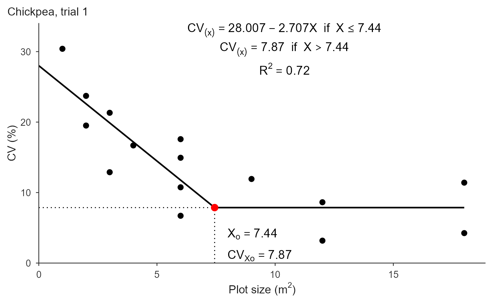
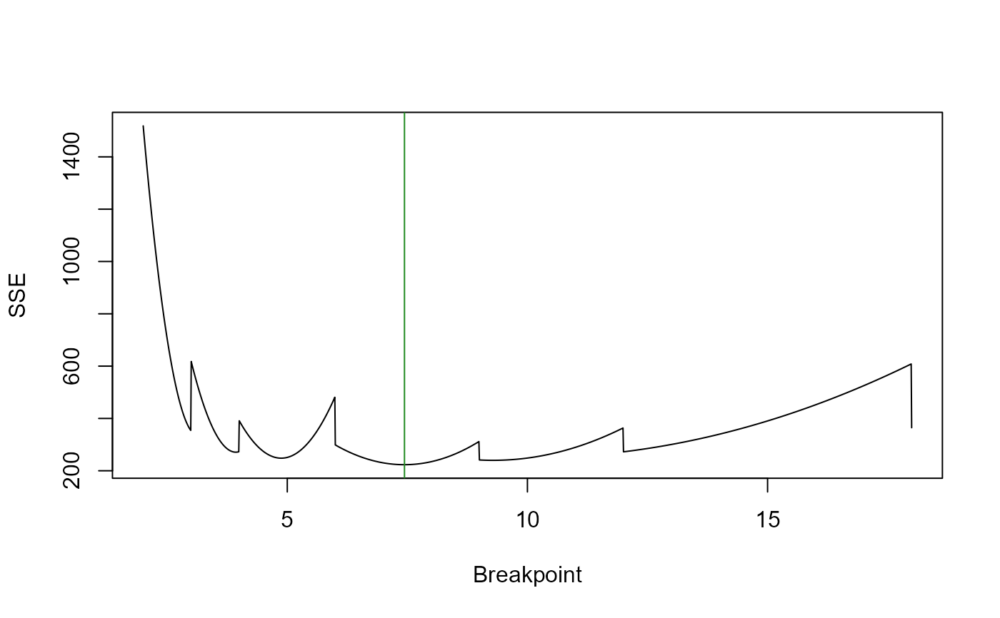

fit_lrp.RdFits the linear-plateau (broken-line) model
$$f(x) = a + b\,x \ \text{ if } x \le X_0, \qquad
f(x) = a + b\,X_0 \ \text{ if } x > X_0$$
by profiling the breakpoint \(X_0\) over a fine grid. For each candidate
breakpoint the linear coefficients are obtained by least squares and the
plateau is set to \(a + b\,X_0\); the breakpoint minimizing the residual
sum of squares over all observations is returned. Profiling the breakpoint
avoids the starting-value sensitivity and local-minima of a direct
nls fit, so no initial values are required.
fit_lrp(
.data = NULL,
x = NULL,
cv = NULL,
trial = NULL,
step = 0.001,
method = c("segment", "ramp"),
search_range = NULL,
start = NULL,
local_min_tol = 0.1,
bootstrap = FALSE,
n_boot = 1000,
conf_level = 0.95,
weights = FALSE
)optional data frame. When supplied, x, cv and
trial are interpreted as column names (character strings). When
NULL (default) the vector interface is used.
either numeric vectors (vector interface) or, when .data
is a data frame, the names of the predictor and response columns.
optional name of the column identifying the trial. When given, one model is fit per trial.
grid step for the breakpoint search. Default 0.001; larger
values run faster with a slightly coarser breakpoint.
how the linear coefficients are estimated at each candidate
breakpoint. "segment" (default) uses only observations with
x <= X0, reproducing the Paranaiba et al. (2009) procedure.
"ramp" uses all observations on the basis pmin(x, X0), the
standard least-squares LRP.
optional numeric c(lower, upper) restricting the
interval (in units of x) where the breakpoint is searched. Must fall
within the data range. Useful when the optimum is known to lie in a region
and an outlier could otherwise pull the breakpoint outside it. NULL
(default) searches the full feasible interval.
optional single breakpoint value. The fit is unchanged, but the
result also carries a $compat element holding the local minimum of
the basin containing start: the solution a gradient-based fitter
(nls, nlsLM) seeded there would return. Use it to reproduce
published results obtained with such implementations, and to see how much
worse they fit.
relative SSE tolerance (default 0.10) deciding which
local minima count as competing. A second basin fitting within 10% of the
optimum means the breakpoint is not sharply identified. Only labelling is
affected (the competing column of $local_minima and the stars
in print()); the fit itself never changes, and no warning is issued.
logical; if TRUE, also estimate the uncertainty of
the breakpoint by resampling (default FALSE). Off by default because
the published procedure reports the point estimate alone. See the section
"Uncertainty of the breakpoint".
number of bootstrap resamples (default 1000). Used only when
bootstrap = TRUE.
confidence level of the percentile interval (default 0.95).
Used only when bootstrap = TRUE.
weights for a weighted least-squares fit. FALSE
(default) fits unweighted, as the published procedure does. TRUE
uses the n column of .data, the number of plots behind each
CV, as returned by [calc_cv_shapes()]. A single column name or a numeric
vector are also accepted. See the section "Weighting by the number of
plots".
For a single series, an object of class "lrp_fit": a list with
coefficients (a, b); parameters (Breakpoint, Breakpoint_Response,
R2, RMSE, AIC, BIC); fitted; residuals; data;
method; step; local_min_tol; local_minima (the
competing basins, with their SSE excess over the optimum and a
competing flag, or NULL); sse_profile (the
SSE at every candidate breakpoint); compat when start was
given; and bootstrap when bootstrap = TRUE, a list with
ci, se, p_value (existence of the breakpoint),
statistic, replicates, n_valid and conf_level.
With trial, an object of class "lrp_multi": a list with
summary (one row per trial), fits (the individual
"lrp_fit" objects) and method.
The response is typically the coefficient of variation (CV, percent) and the
predictor the plot size. Supply the individual CV values (one per basic-unit
form), not the means per plot size; repeated x values are expected.
With few distinct plot sizes the residual sum of squares is a stepped
function of the breakpoint, and it often has several local minima. The grid
search always returns the global optimum, but a second basin may fit almost
as well, in which case the breakpoint is not sharply identified and different
implementations legitimately disagree. Every local minimum of the profile is
reported in $local_minima; those fitting within local_min_tol
of the optimum are flagged in the competing column and starred by
print(). No warning is issued: on stepped profiles competing basins
are common, so a warning would fire on almost every fit. Inspect
$local_minima and $sse_profile instead, and lower
local_min_tol to flag only near-ties. Gradient-based fitters return
whichever basin their starting value lands in; start reproduces that.
The CV values are not equally reliable. A shape of area \(X\) leaves
\(n = LC/X\) plots in the grid, so the CV of the largest plot size may rest
on two plots while the smallest rests on dozens. weights = TRUE fits
by weighted least squares with \(n\) as the weight, which is the natural
measure of how much information stands behind each point.
This is off by default because it is not what the published procedure does, and it moves the answer: the small plot sizes, where the CV is highest, gain most of the weight, so the fitted line is pulled towards them and the breakpoint typically falls. Report both if you use it.
Two cautions. Weighting corrects for unequal information, not for
dependence: every CV in the table comes from the same grid of basic units,
so the points are not independent with or without weights. And a weighted
fit's \(R^2\), RMSE, AIC and BIC follow the lm
convention of being computed on weighted residuals, so they cannot be
compared with those of the unweighted fit.
bootstrap = TRUE adds two things the point estimate cannot give.
The first is a percentile confidence interval: the shapes (the rows of the
CV table) are resampled with replacement, the model is refit on each
resample, and the empirical quantiles of the resulting breakpoints form the
interval. Resamples with fewer than three distinct plot sizes cannot place a
breakpoint and are discarded; $bootstrap$n_valid reports how many were
kept. The interval is usually wide, which is the honest reading of a
breakpoint estimated from a handful of plot sizes.
The second is a test of whether the breakpoint exists at all. Under the null hypothesis that the CV falls linearly and never plateaus, the breakpoint is not identified, so the usual likelihood-ratio statistic does not have a chi-square distribution (Davies, 1987). The null distribution is simulated instead: residuals of the straight-line fit are resampled, the plateau model is refit to each simulated series, and the p-value is the proportion of simulated SSE reductions that match or exceed the observed one. A large p-value means a straight line explains the data as well as the plateau, and the optimal plot size should not be read off this fit.
Both are computed on the same breakpoint grid as the main fit, so
step controls their resolution too. Set the random seed before
calling to make the result reproducible.
fit_lrp(x, cv) fits a single series and returns an
"lrp_fit".
fit_lrp(.data, x = "x", cv = "cv", trial = "trial")
takes a data frame plus column names. With trial, one model is fit
per trial and an "lrp_multi" object (summary table plus the
individual fits) is returned. Column names default to "x",
"cv" and "trial"; missing columns raise a clear error.
Paranaiba, P. F., Ferreira, D. F. & Morais, A. R. (2009). Tamanho otimo de
parcelas experimentais: proposicao de metodos de estimacao.
Revista Brasileira de Biometria, 27(2), 255-268.
Cargnelutti Filho, A. et al. (2025). Revista Vivencias, 21(43), 499-513.
Davies, R. B. (1987). Hypothesis testing when a nuisance parameter is present
only under the alternative. Biometrika, 74(1), 33-43.
Efron, B. & Tibshirani, R. J. (1993). An Introduction to the
Bootstrap. Chapman & Hall, New York.
[plot.lrp_fit()], [predict.lrp_fit()]
## Chickpea uniformity trial, trial 1 (Cargnelutti Filho et al., 2025).
## One CV per basic-unit form: plot sizes repeat because several shapes
## give the same area.
X <- c(1, 2, 2, 3, 3, 4, 6, 6, 6, 6, 9, 12, 12, 18, 18)
CV1 <- c(30.40, 19.51, 23.72, 12.89, 21.32, 16.69, 6.71, 10.75,
17.58, 14.94, 11.93, 3.18, 8.63, 4.25, 11.41)
## A coarse grid runs fast and already reproduces the published Xo to two
## decimals; the default step = 0.001 refines the third.
fit <- fit_lrp(X, CV1, step = 0.01)
fit
#> Linear Response Plateau (LRP) fit
#> Method: segment
#> Breakpoint (Xo): 7.440
#> CV at breakpoint: 7.870
#> R2: 0.715 RMSE: 3.857 AIC: 91.1 BIC: 93.9
#>
#> Local minima of the SSE profile (5):
#> Xo = 9.280 SSE +7.5% vs optimum *
#> Xo = 4.870 SSE +11.2% vs optimum
#> Xo = 3.930 SSE +21.5% vs optimum
#> ... see $local_minima for all
#> * fits within 10% of the optimum (local_min_tol); breakpoint not sharply identified
coef(fit)
#> a b
#> 28.006590 -2.706562
fit$parameters[c("Breakpoint", "Breakpoint_Response")]
#> Breakpoint Breakpoint_Response
#> 7.440000 7.869772
## CV expected at plot sizes that were not evaluated
predict(fit, newx = c(2, 5, 7.5, 15))
#> [1] 22.593467 14.473782 7.869772 7.869772
# \donttest{
## Full precision (about ten times slower)
fit_lrp(X, CV1)$parameters["Breakpoint"]
#> Breakpoint
#> 7.436
## Title and styling belong to plot(), not to the fit
plot(fit, title = "Chickpea, trial 1")

## Weighting by the number of plots -----------------------------------------
## The CV of an 18 m2 shape rests on 2 plots, that of a 1 m2 shape on 36.
## Weighting by n pulls the fit towards the small sizes, so Xo falls.
n_plots <- c(36, 18, 18, 12, 12, 9, 6, 6, 6, 6, 4, 3, 3, 2, 2)
c(unweighted = unname(fit_lrp(X, CV1, step = 0.01)$parameters["Breakpoint"]),
weighted = unname(fit_lrp(X, CV1, step = 0.01,
weights = n_plots)$parameters["Breakpoint"]))
#> unweighted weighted
#> 7.44 3.60
## Straight from a grid, `weights = TRUE` finds the n column itself
grid1 <- as.matrix(dados_ensaio_C1[dados_ensaio_C1$Rep == 1,
paste0("C", 1:8)])
tab <- calc_cv_shapes(grid1)
#> CV by shape for 1 trial(s).
fit_lrp(tab, x = "x", cv = "cv", step = 0.05, weights = TRUE)$parameters["Breakpoint"]
#> Using x = 'x', cv = 'cv' (single series).
#> Breakpoint
#> 5.25
## Uncertainty of Xo -------------------------------------------------------
## Off by default, because the published procedure reports the point alone.
set.seed(1)
unc <- fit_lrp(X, CV1, step = 0.01, bootstrap = TRUE, n_boot = 500)
unc
#> Linear Response Plateau (LRP) fit
#> Method: segment
#> Breakpoint (Xo): 7.440
#> 95% CI (percentile): [3.155, 14.361] SE 3.298
#> breakpoint exists: p = 0.0120 (500 resamples)
#> CV at breakpoint: 7.870
#> R2: 0.715 RMSE: 3.857 AIC: 91.1 BIC: 93.9
#>
#> Local minima of the SSE profile (5):
#> Xo = 9.280 SSE +7.5% vs optimum *
#> Xo = 4.870 SSE +11.2% vs optimum
#> Xo = 3.930 SSE +21.5% vs optimum
#> ... see $local_minima for all
#> * fits within 10% of the optimum (local_min_tol); breakpoint not sharply identified
unc$bootstrap$ci
#> [1] 3.15475 14.36150
## p_value tests whether a breakpoint exists at all: a large value means a
## straight line explains the CV just as well, and no plateau should be read.
unc$bootstrap$p_value
#> [1] 0.01197605
## Competing breakpoints ---------------------------------------------------
## Every local minimum of the SSE profile is reported; those fitting within
## local_min_tol of the optimum are flagged as competing.
fit$local_minima
#> breakpoint SSE SSE_excess competing
#> 1 9.28 239.8679 0.07469676 TRUE
#> 2 4.87 248.1216 0.11167642 FALSE
#> 3 3.93 271.1003 0.21462936 FALSE
#> 4 12.00 272.4233 0.22055693 FALSE
#> 5 2.99 354.3422 0.58758392 FALSE
## Lower the tolerance to flag only near-ties
fit_lrp(X, CV1, step = 0.01, local_min_tol = 0.02)$local_minima
#> breakpoint SSE SSE_excess competing
#> 1 9.28 239.8679 0.07469676 FALSE
#> 2 4.87 248.1216 0.11167642 FALSE
#> 3 3.93 271.1003 0.21462936 FALSE
#> 4 12.00 272.4233 0.22055693 FALSE
#> 5 2.99 354.3422 0.58758392 FALSE
## The whole profile, for inspection
plot(fit$sse_profile, type = "l", xlab = "Breakpoint", ylab = "SSE")
abline(v = fit$parameters["Breakpoint"], col = "forestgreen")

## What a gradient fitter (nls, nlsLM) seeded at 12 would have returned.
## The reported fit does not change; $compat shows the cost in SSE.
fit_lrp(X, CV1, step = 0.01, start = 12)$compat
#> $start
#> [1] 12
#>
#> $breakpoint
#> [1] 12
#>
#> $coefficients
#> a b
#> 24.506438 -1.671301
#>
#> $plateau
#> [1] 4.450822
#>
#> $SSE
#> [1] 272.4233
#>
#> $SSE_excess
#> [1] 0.2205569
#>
## Other arguments ---------------------------------------------------------
## Restrict the search when an outlier pulls the breakpoint away
fit_lrp(X, CV1, step = 0.01, search_range = c(5, 12))$parameters["Breakpoint"]
#> Breakpoint
#> 7.44
## "ramp" estimates the descending line from every observation instead of
## only those below the breakpoint, which can shift the optimum
fit_lrp(X, CV1, step = 0.01, method = "ramp")$parameters["Breakpoint"]
#> Breakpoint
#> 7.44
## Several trials at once --------------------------------------------------
trials <- rbind(
data.frame(x = X, cv = CV1, trial = "T1"),
data.frame(x = X, cv = CV1 * 0.85, trial = "T2")
)
res <- fit_lrp(trials, x = "x", cv = "cv", trial = "trial", step = 0.01)
#> Using x = 'x', cv = 'cv', trial = 'trial' -> 2 trials.
res$summary
#> trial a b breakpoint plateau R2 RMSE AIC BIC n_local
#> 1 T1 28.0066 -2.7066 7.44 7.8698 0.7154 3.8574 91.068 93.900 5
#> 2 T2 23.8056 -2.3006 7.44 6.6893 0.7154 3.2788 86.193 89.025 5
## CVxo feeds the number of replications
calc_replicates(treatments = c(5, 10, 20),
cv_percent = unname(fit$parameters["Breakpoint_Response"]),
lsd_percent = c(10, 20))
#> Optimal number of replications
#> Design: CRD CV: 7.87% alpha: 0.05
#> Rows: 6 | Non-converged: 0
#>
#> Treatments CV_percent LSD_percent Alpha Design r_continuous r_optimal df_error
#> 5 7.869772 10 0.05 CRD 10.00 11 50
#> 10 7.869772 10 0.05 CRD 12.88 13 120
#> 20 7.869772 10 0.05 CRD 15.84 16 300
#> 5 7.869772 20 0.05 CRD 3.23 4 15
#> 10 7.869772 20 0.05 CRD 3.67 4 30
#> 20 7.869772 20 0.05 CRD 4.23 5 80
#> q_tukey converged at_floor
#> 4.002 TRUE FALSE
#> 4.560 TRUE FALSE
#> 5.057 TRUE FALSE
#> 4.367 TRUE FALSE
#> 4.824 TRUE FALSE
#> 5.183 TRUE FALSE
# }